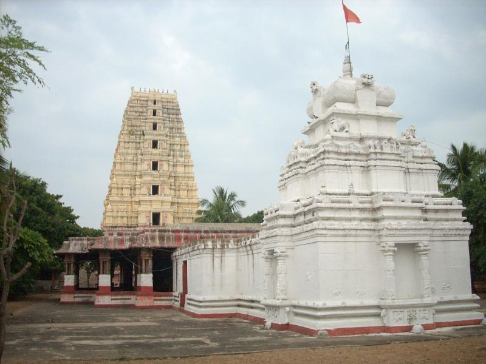

from Kollapur it is Located 9 km from Kollapur & 158 km from Mahabubnagar, this place is famous for the ancient Agasthyeswara Swamy temple built between the 10th & 16th century A.D. Festivals like Sivarathri, Kartika Pournami, Masa Sivarathri and Toli Ekadasi are celebrated with great fervour. This temple was shifted to Jetprole when the Krishna waters threatened to submerge the villages after the construction of the Srisailam Dam. Another temple 15 km from Kollapur, is the Madana Gopala Swamy temple built by the Rajas of Jetprole during the 16th century A.D. The pillars, beams and the walls of the temple are richly adorned with beautiful sculptures.
